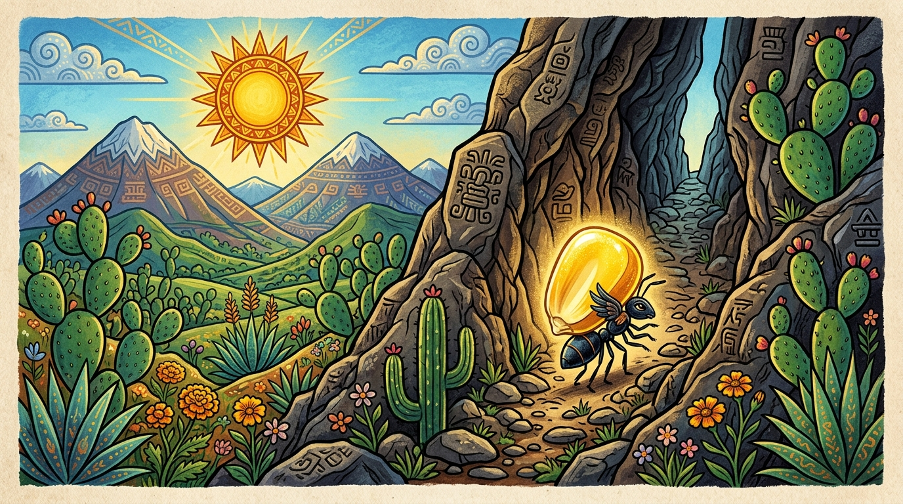

Causa y Efecto: Biblioteca
Acuerdos de convivencia escolar y consecuencias reflexivas
¡El Gran Misterio de las Páginas Desordenadas!
La Leyenda del Maíz

Fragmento Literario
¡Misión Cumplida en la Biblioteca!
Has restaurado el sentido de todas las historias con lógica causal

Sellos de Cuentos Restaurados:
5 / 5
Estrellas Doradas
100%
Precisión Causal
Maestro Lector
Nivel de Detective
🎉 ¡Felicidades! Ahora sabes que en todo cuento, cada hecho tiene una causa y provoca consecuencias en la trama.
👩🏫 Guía Didáctica y Orientación Pedagógica (3° Primaria)
Campo Formativo: Lenguajes (NEM)
Contenido: Comprensión y producción de textos instructivos y narrativos (cuentos y leyendas)
PDA: Identifica y explica relaciones de causa y consecuencia en la trama de cuentos y leyendas.
🎯 Propósito Didáctico
En 3° grado de primaria, los estudiantes transitan de una lectura meramente descriptiva hacia una comprensión analítica. Este recurso digital ayuda al alumnado a comprender que las tramas narrativas no son secuencias aisladas de hechos, sino un entramado donde una acción o motivo (Causa) desencadena directamente un nuevo suceso (Efecto o Consecuencia).
🧭 Mediación Sugerida en el Aula (Uso con Proyector o Pantalla Táctil)
- Pregunta detonadora antes de elegir: "¿Qué tuvo que pasar antes para que ocurriera este hecho?" o "¿Qué pasó después a raíz de esto?".
- Trabajo cooperativo por filas o equipos: Proyecte el fragmento en gran formato. Pida a un equipo que lea en voz alta y a otro equipo que argumente cuál tarjeta es la causa verdadera usando el conector "porque...".
- La Balanza Causal: Al acertar, haga notar a los niños cómo la fórmula en pantalla une las dos oraciones mediante conectores como "PORQUE" o "POR LO TANTO".
📝 Adecuaciones e Inclusión
Incluye soporte de síntesis de voz nativa del navegador (botón de audio), alto contraste de colores, botones de gran tamaño para pantallas táctiles y retroalimentación formativa sin penalizaciones punitivas.